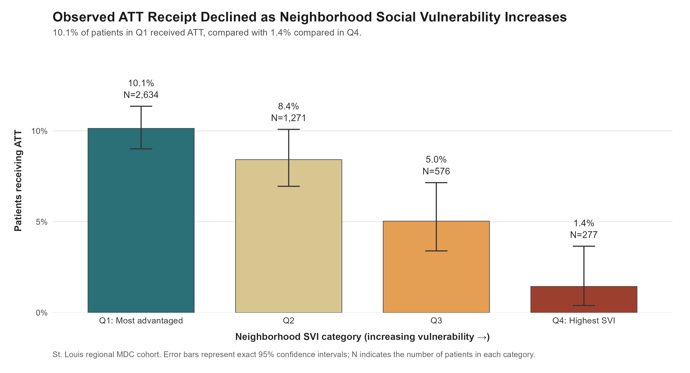
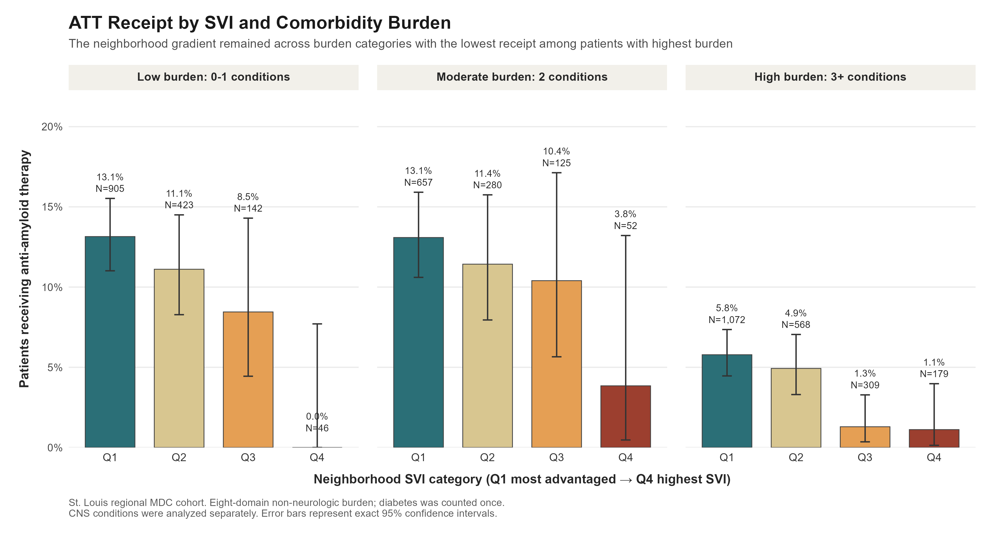
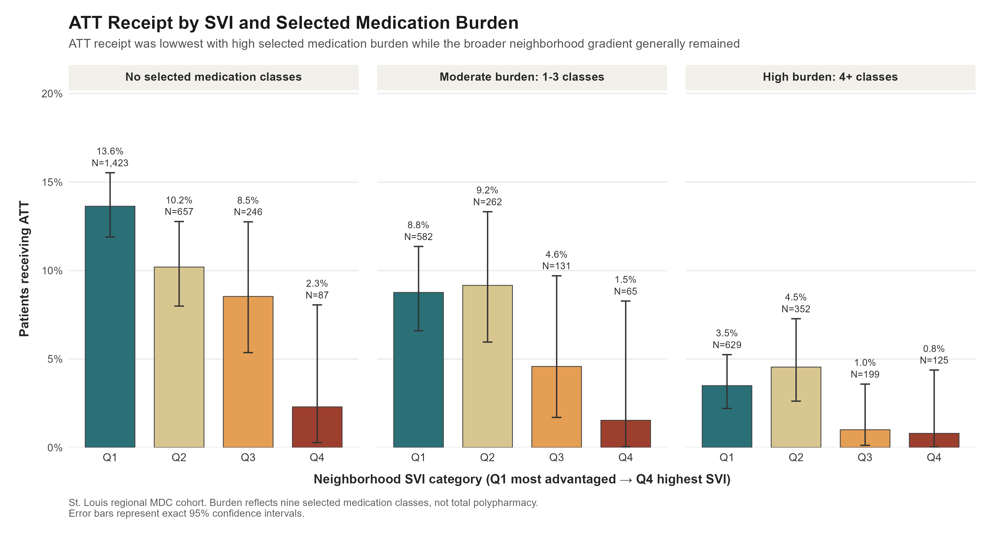
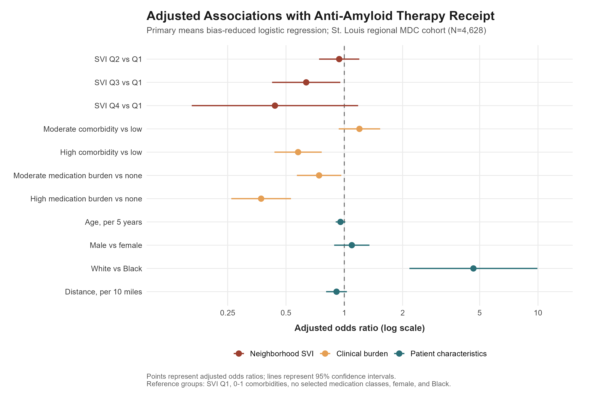

About Me
I am a Clinical Research Coordinator II at the Washington University Memory Diagnostic Center, where I support Alzheimer's disease research and the clinical implementation of anti-amyloid therapies. My work involves coordinating clinic-to-research workflows, supporting longitudinal research and registry activities, collaborating with physicians and research teams, and helping connect patients with research opportunities.
My background is in psychology, neurocognitive assessment, and clinical research. I previously worked in Alzheimer's disease driving research, neuropsychological assessment, and oncology clinical trials before returning to the Memory Diagnostic Center in a research coordination role.
I recently completed a Certificate in Data Analytics at Washington University in St. Louis, where I developed skills in R, statistical analysis, data visualization, and the use of real-world clinical data. I am particularly interested in Alzheimer's disease, health equity, clinical implementation, and understanding how patient, clinical, and neighborhood factors shape access to and receipt of emerging therapies. These interests formed the basis of my Data Analytics capstone project below.
Project
Clinical Complexity, Neighborhood Vulnerability, and Anti-Amyloid Therapy Receipt
For my Data Analytics capstone, I examined whether neighborhood social vulnerability and clinical complexity were associated with anti-amyloid therapy receipt among patients seen at the Washington University Memory Diagnostic Center.
This project built on prior geospatial work showing that patients receiving anti-amyloid therapy tended to live in more advantaged neighborhoods. In collaboration with the research team, I explored whether differences in comorbidity burden and selected medication burden could help explain that pattern.
Using R, I analyzed treatment receipt across Social Vulnerability Index quartiles and developed measures of clinical complexity based on comorbidities and selected medication classes. I used descriptive analyses, mean bias-reduced logistic regression, sequential modeling, and sensitivity analyses to evaluate these relationships.
Anti-amyloid therapy receipt declined as neighborhood vulnerability increased. Higher comorbidity burden and higher selected medication burden were also associated with lower treatment receipt. However, these clinical factors did not fully explain the neighborhood gradient, suggesting that additional patient, clinical, and structural factors may contribute to differences in treatment receipt.
Key Findings
Neighborhood Vulnerability
Anti-amyloid therapy receipt declined from 10.1% in the most advantaged SVI quartile to 1.4% in the most vulnerable quartile.
Clinical Complexity
Higher comorbidity burden and higher selected medication burden were both independently associated with lower odds of treatment receipt.
Persistent Neighborhood Gradient
Adjustment for demographics, distance, comorbidity burden, and medication burden attenuated the neighborhood gradient, but did not fully account for it.
Selected Visualizations




Skills Demonstrated
- R
- Data cleaning and variable construction
- Descriptive analysis
- Logistic regression
- Bias-reduced regression
- Sensitivity analysis
- Data visualization
- Clinical research
- Health equity analysis
- Research communication
Resume
View my resume for additional information about my clinical research, data analytics, and healthcare experience.
View Resume